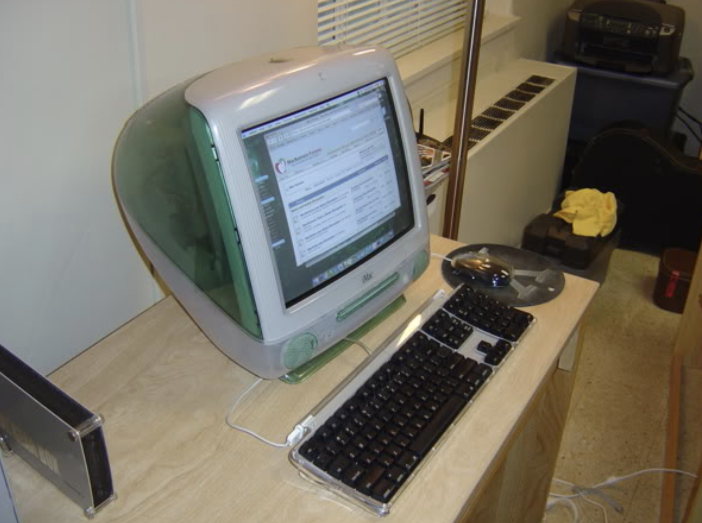
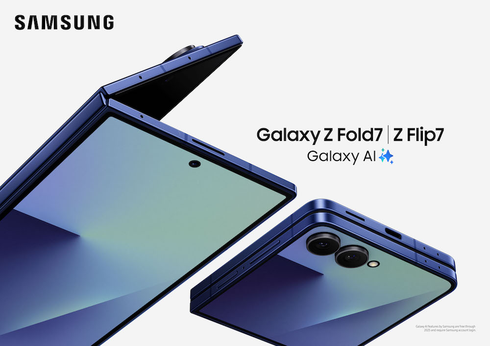
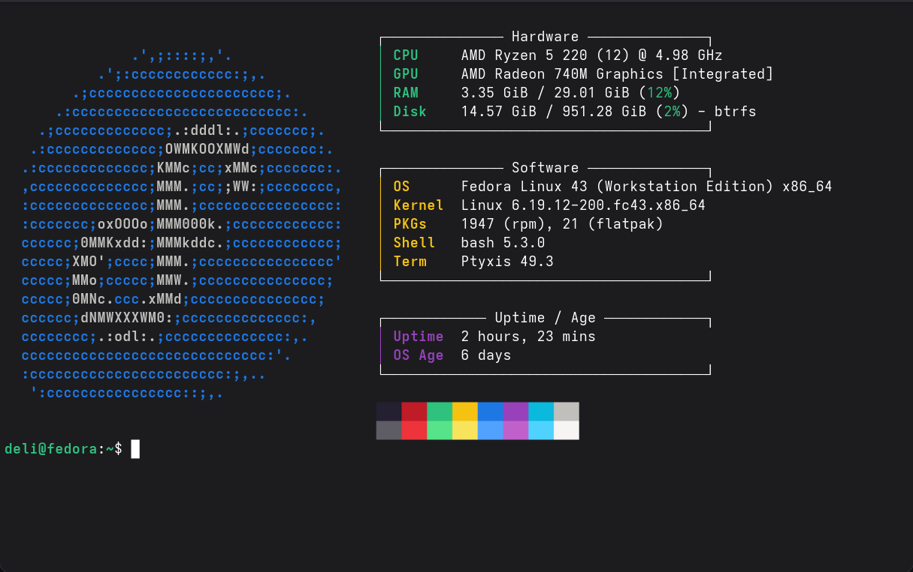

Thoughts on hardware, software, and the digital world. Software Tutorials June 2026 Artificial Intelligence  macOS June 2026 Microsoft Windows June 2026 Linux June 2026 What I Miss from 2014 Smartphones May 2026  Why I Love Foldable Phones May 2026  My Recent Return to Linux May 2026